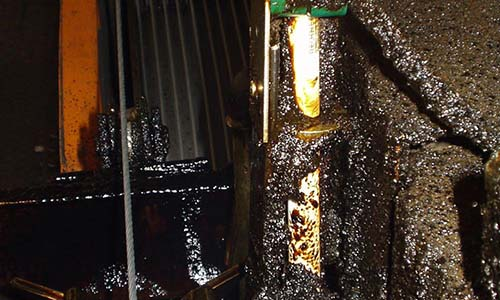

|
|

近几十年来，科学技术飞跃进步，生产力迅速发展，伴随着工业发展而来的是一系列令人吃惊的事实：全世界每年消耗掉的矿物燃料，本世纪初不足15亿吨，到70年代已增至80亿吨!人类每年在实验室种制造出成千上万种新化学品，并投入生产、使用。有毒物质年产量达400万吨，他们进入环境后，在环境中扩散、迁移、积累和转化;南极大陆冰原覆盖，荒无人烟，但从生活在那里的企鹅体内也检测出滴滴涕;在北极附近的格陵兰的冰盖层中，近几十年铅和贡的含量不断上升，可以说污染已无所不在，保护环境、维护生态平衡已经成了人类刻不容缓的任务!工业革命和环境问题的演化大致可以分为三个阶段：
(一)早期生态环境的破坏，时间大约从人类出现开始直到工业革命。与后两个阶段相比，是一个漫长的时期。在这个阶段，人类经历了从以采集狩猎为生的游牧生活到以耕种和养殖为生的定居生活的转变。随着种植、养殖和渔业的发展，人类社会开始第一次劳动大分工。人类从完全依赖大自然的恩赐转变到自觉利用土地、生物、陆地水体和海洋等自然资源。人类的生活资料有了较以前稳定得多的来源，人类的种群开始迅速扩大。人类社会需要更多的资源来扩大物质生产规模，便开始出现烧荒、垦荒、兴修水利工程等改造活动，引起严重的水土流失、土壤盐渍化或沼泽化等问题。但此时的人类还意识不到这样做的长远后果，一些地区因而发生了严重的环境问题，主要是生态退化。较突出的例子是，古代经济发达的美索不达米亚，由于不合理的开垦和灌溉，后来变成了不毛之地;中国的黄河流域(包括我们三门峡地区)，曾经森林广布，土地肥沃，是文明的发源地，而西汉和东汉时期的两次大规模开垦，虽然促进了当时的农业发展，可是由于森林骤减，水源得不到涵养，造成水旱灾害频繁，水土流失严重，沟壑纵横，土地日益贫瘠，给后代造成了不可弥补的损失。但总的说来，这一阶段的人类活动对环境的影响还是局部的，没有达到影响整个生物圈的程度。
(二)近代城市环境问题，时间从工业革命开始到二十世纪八十年代发现南极上空的臭氧洞。工业革命是世界史的一个新时期的起点，此后的环境问题也开始出现新的特点并日益复杂化和全球化。十八世纪后期欧洲的一系列发明和技术革新大大提高了人类社会的生产力，人类开始插上技术的翅膀，以空前的规模和速度开采和消耗能源和其他自然资源。新技术使英国、欧洲和美国等地在不到一个世纪的时间里先后进入工业化社会，并迅速向全世界蔓延，在世界范围内形成发达国家和发展中国家的差别。工业化社会的特点是高度城市化。这一阶段的环境问题跟工业和城市同步发展。先是由于人口和工业密集，燃煤量和燃油量剧增，发达国家的城市饱受空气污染之苦，后来这些国家的城市周围又出现日益严重的水污染和垃圾污染，工业三废、汽车尾气更是加剧了这些污染公害的程度。在后来的二十世纪六、七十年代，发达国家普遍花大力气对这些城市环境问题进行治理，并把污染严重的工业搬到发展中国家，较好地解决了国内的环境污染问题。随着发达国家环境状况的改善，发展中国家却开始步发达国家的后尘，重走工业化和城市化的老路，城市环境问题有过之而无不及，同时伴随着严重的生态破坏。
(三)当前的环境问题。从1984年英国科学家发现、1985年美国科学家证实南极上空出现的“臭氧洞”开始，人类环境问题发展到当代环境问题阶段。这一阶段环境问题的特征是，在全球范围内出现了不利于人类生存和发展的征兆，目前这些征兆集中在酸雨、臭氧层破坏和全球变暖三大全球性大气环境问题上。与此同时，发展中国家的城市环境问题和生态破坏、一些国家的贫困化愈演愈烈，水资源短缺在全球范围内普遍发生，其他资源(包括能源)也相继出现将要耗竭的信号。这一切表明，生物圈这一生命支持系统对人类社会的支撑已接近它的极限。这也表明了环境问题的复杂性和长远性。 |